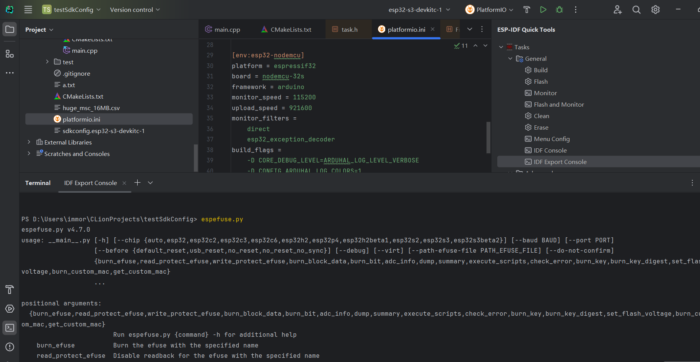
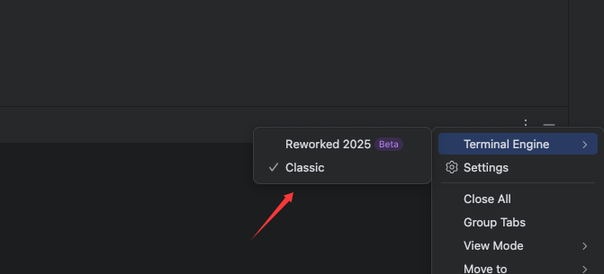
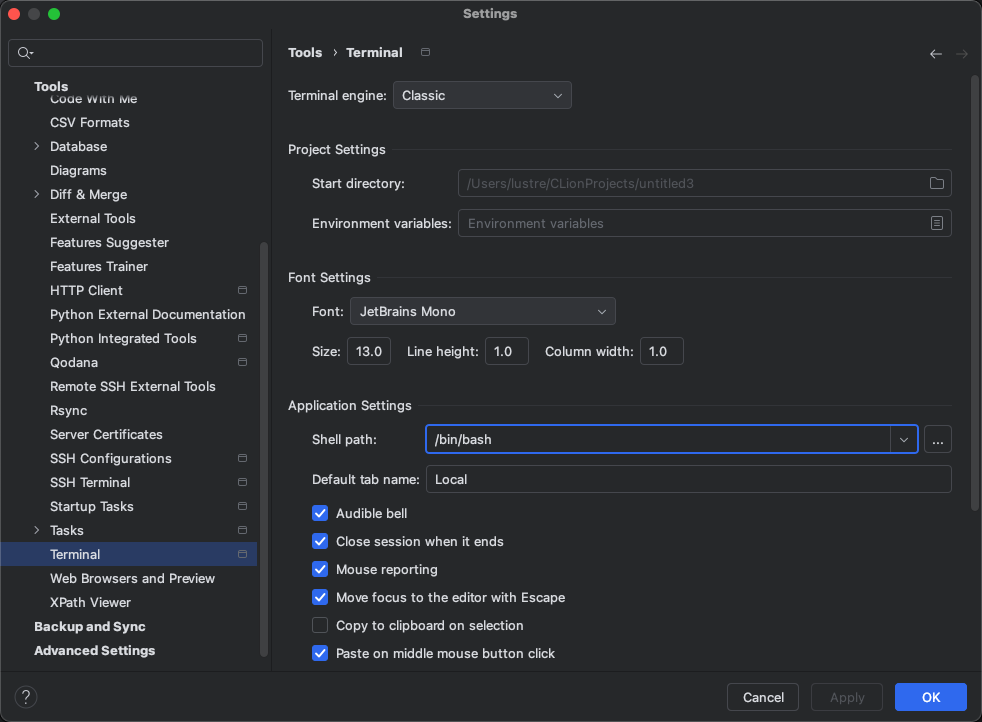

快捷命令树

快捷命令树会在任意的项目中保留，正常情况是给ESP-IDF项目使用。 如果希望使用非项目级别的ESP-IDF命令，如在platformio项目中使用espefuse.py也是可以的。

依赖当前项目的Cmake profile选中的ToolChain。
注意事项
IDF Export Console会使用原来的export脚本，将环境变量导入当前会话，比本插件直接对比环境变量差异追加的环境变量更加全面。例如espefuse.py在IDF Console中无法使用，建议使用IDF Export Console.在CLion的终端里面的使用MenuConfig 中使用ESC默认行为是上方编辑器获取焦点。
从而使得ESC不可操作Menuconfig。 建议移除终端的ESC按键将焦点切换到编辑器功能
进入Settings ->keymap -> Plugins | Terminal | Switch Focus To Editor 中文版本是 设置->按键映射->插件 | Terminal | 将焦点切换到编辑器
MacOS下终端类型任务命令截断
用经典终端

同时将的终端Shell设置为bash

可以避免，任务新建终端命令截断问题
17 八月 2025